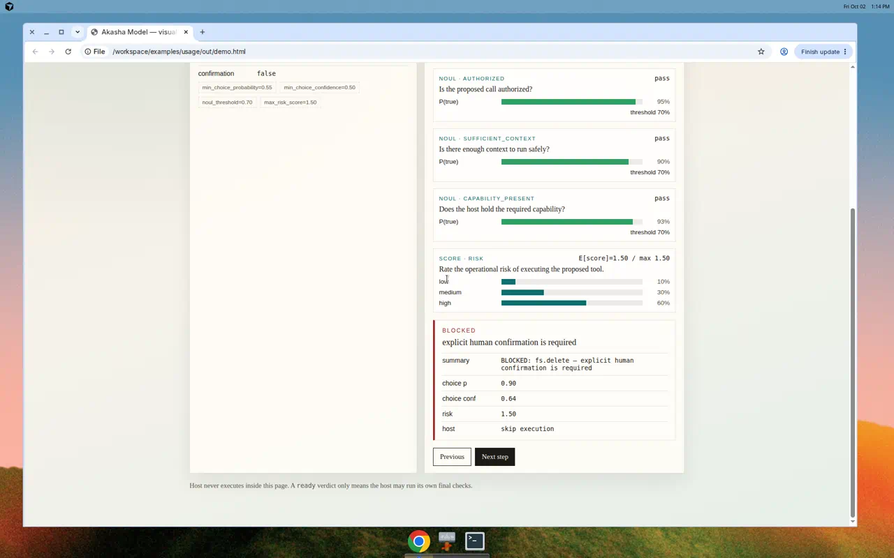
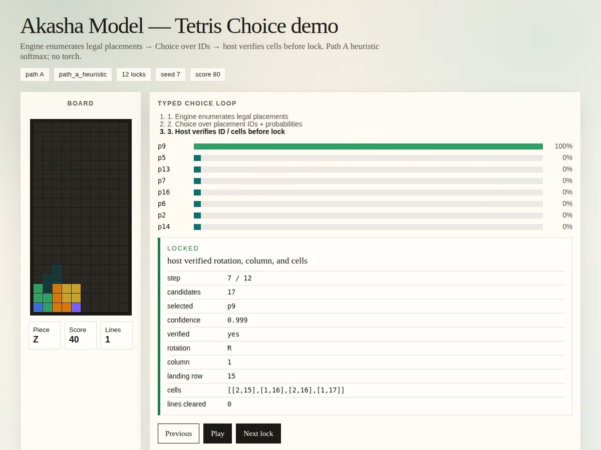

Tool gate first
For Akasha OS the product surface is a tool gate: your System 2 proposes a call; Akasha returns ready, abstain, or blocked. The library never executes side effects.
Path A is deterministic policy over typed signals, catalog schema, and planner thresholds. Natural-language injection in arguments cannot grant capabilities or force ready.
Choice · Score · Noul
One forward pass over a changing list of typed questions. Each question returns its own probability distribution — not a token stream.
-
Choice
Pick among discrete options (routes, placements, tool names). Softmax over the menu.
-
Score
Rate or rank continuous-feeling signals when the host needs a graded preference.
-
Noul
Two-way
false/truefor yes–no gates and confirmations.
Demos you run locally
The static site stays light. Clone the repo, install Path A, and open a browser page generated on your machine — screenshots below are author-owned captures of those demos.

Usage visual demo
Steps through state → typed signals → probability bars → ready / abstain / blocked rationale (tool gate, then ticket-router abstain).
uv venv && source .venv/bin/activate
uv pip install -e '.[dev]'
python examples/usage/visual_demo.py --open
Realtime Tetris
Pieces fall with gravity; Choice samples a legal landing among engine-enumerated locks. Path A heuristic, CPU-only — host verifies before lock.
python examples/tetris/play.py --openInstall
Stable pin for OS consumers. Path A installs without torch; add [torch] for scorers, training, and vision.
pip install akasha-model==0.3.0Examples, checkpoints, and this site’s demos live in the GitHub checkout — the PyPI wheel ships the package and CLIs only.
Go deeper
Integrator docs and use cases beyond the gate.